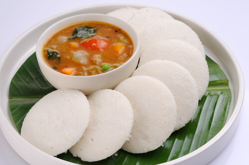

Idli Sambhar

Idli Sambar is a traditional South Indian meal made with soft steamed rice
cakes served with spicy lentil soup called sambar. It is healthy, light,
and commonly eaten for breakfast.
The fluffy idlis combined with flavorful sambar make this dish nutritious
and delicious.
Ingredients
- Idli batter
- 1 cup toor dal
- Mixed vegetables
- Tamarind pulp
- Sambar powder
- Mustard seeds
- Curry leaves
- Oil
- Salt to taste
Steps
- Pour idli batter into molds.
- Steam the idlis until soft and fluffy.
- Cook toor dal until smooth.
- Add vegetables and tamarind to the dal.
- Mix in sambar powder and boil well.
- Prepare tempering with mustard seeds and curry leaves.
- Add tempering to sambar.
- Serve hot with idlis.
Back to home